Assignments
This page will contain all the assignments you submit for the class.
Instructions for all assignments
I want you to submit your assignment as a PDF, so I can keep a record of what the code looked like that day. I also want you to include your answers on your personal GitHub website. This will be good practice for editing your website and it will help you produce something you can keep after the class is over.
Download the Assignment1.Rmd file from Canvas. You can use this as a template for writing your answers. It’s the same as what you can see on my website in the Assignments tab. Once we’re done with this I’ll edit the text on the website to include the solutions.
On RStudio, open a new R script in RStudio (File > New File > R Script). This is where you can test out your R code. You’ll write your R commands and draw plots here.
Once you have finalized your code, copy and paste your results into this template (Assignment 1.Rmd). For example, if you produced a plot as the solution to one of the problems, you can copy and paste the R code in R markdown by using the
``{r} ```command. Answer the questions in full sentences and Save.Produce a PDF file with your answers. To do this, knit to PDF (use Knit button at the top of RStudio), locate the PDF file in your docs folder (it’s in the same folder as the Rproj), and submit that on on Canvas in Assignment 1.
Build Website, go to GitHub desktop, commit and push. Now your solutions should be on your website as well.
Assignment 1
Collaborators: Theo Athanitis.
Problem 1
Install the datasets package on the console below using install.packages("datasets"). Now load the library.
#install.packages("datasets")
library(datasets)
#install.packages("knitr")
library(knitr) #used for knitting to a pdfLoad the USArrests dataset and rename it dat. Note that this dataset comes with R, in the package datasets, so there’s no need to load data from your computer. Why is it useful to rename the dataset?
dat <- USArrestsIt is useful to rename the dataset as it creates a copy of the dataset stored in this newly created variable that can now be modified without changing the original, such as adding a new column for states. Additionally, renaming it can make it easier to call/ reference in later functions.
Problem 2
Use this command to make the state names into a new variable called State.
dat$state <- tolower(rownames(USArrests))This dataset has the state names as row names, so we just want to make them into a new variable. We also make them all lower case, because that will help us draw a map later - the map function requires the states to be lower case.
List the variables contained in the dataset USArrests.
names(dat)## [1] "Murder" "Assault" "UrbanPop" "Rape"The variables contained in this dataset are Murder, Assault, UrbanPop, Rape, and state.
Problem 3
What type of variable (from the DVB chapter) is Murder?
Answer: Quantitative- the values of Murder are numerical values with measurment units as they record the amount of Murder arrests per 100,000 people in each state.
What R Type of variable is it?
Answer: The variable Murder itself is of the type character (as shown using typeof(‘Murder’)), but the Murder values for each state are numeric doubles (as shown with dat[1,1])
typeof('Murder')## [1] "character"typeof(dat[1,1])## [1] "double"Problem 4
What information is contained in this dataset, in general? What do the numbers mean?
Answer: This dataset contains data on violent crime rates and urban area populations for each of the 50 states in 1973. The variables and their values contained are 1. the number of murder arrests per 100,000 people, 2. the number of assault arrests per 100,000 people, 3. the percentage of the population that lives in an urban environment, and 4. the number of rape arrests per 100,000 people for every US state.
Problem 5
Draw a histogram of Murder with proper labels and title.
hist(dat$Murder, main="Histogram of Murder", xlab="Murder arrests (per 100,000)", ylab="Frequency")
Problem 6
Please summarize Murder quantitatively. What are its mean and median? What is the difference between mean and median? What is a quartile, and why do you think R gives you the 1st Qu. and 3rd Qu.?
mean(dat$Murder)## [1] 7.788median(dat$Murder)## [1] 7.25quantile(dat$Murder)## 0% 25% 50% 75% 100%
## 0.800 4.075 7.250 11.250 17.400The mean of Murder is 7.788 and the median of Murder is 7.25. Mean is the sum of all of the states’ murder arrests per 100,000 people divided by 50 (the number of states) also known as the average, while median is the middle value, where half of the value are greater than and half are less than the median, of the states’ murder arrests per 100,000 people values. A quartile is one of three values which divide the dataset into four equal divisions. R likely only provides the 1st and 3rd quartiles (although I did not find a quartile function that operates this way and instead utilized the quantile function) as the 2nd quartile is the same as the median, therefore making the 1st and 3rd much more useful as they are more likely still unknown in comparison to the 2nd quartile when utilizing this function.
Problem 7
Repeat the same steps you followed for Murder, for the variables Assault and Rape. Now plot all three histograms together. You can do this by using the command par(mfrow=c(3,1)) and then plotting each of the three.
par(mfrow=c(3,1))
hist(dat$Murder, main="Histogram of Murder", xlab="Murder arrests (per 100,000)", ylab="Frequency")
hist(dat$Assault, main="Histogram of Assault", xlab="Assault arrests (per 100,000)", ylab="Frequency")
hist(dat$Rape, main="Histogram of Rape", xlab="Rape arrests (per 100,000)", ylab="Frequency")
What does the command par do, in your own words (you can look this up by asking R ?par)?
Answer: The par command is used to modify the manner in which graphs are displayed by finding, modifying, or setting the parameters of graphs. One functionality of par includes the ability to show multiple graphs together in the same graphic as shown here. In this instance, the mfrow=c(3,1) parameter is a vector with subplots of 1 in length (row) and 3 in depth (column), to create the stacked graphs the function above produces.
What can you learn from plotting the histograms together?
Answer: By plotting the histograms together, it is easier to see the distributional differences between the different variables. By organizing the histograms this way, it can be seen that the frequency by state for murder and rape arrests per 100,000 people are skewed to the left, while the frequency of assult arrests by state are more evenly distributed. While these histograms are not directly comparable because of their different scales, skewdness can still be recognized across them and this display makes it easier to recognize.
Problem 8
In the console below (not in text), type install.packages("maps") and press Enter, and then type install.packages("ggplot2") and press Enter. This will install the packages so you can load the libraries.
Run this code:
library('maps')
library('ggplot2')
ggplot(dat, aes(map_id=state, fill=Murder)) +
geom_map(map=map_data("state")) +
expand_limits(x=map_data("state")$long, y=map_data("state")$lat)
What does this code do? Explain what each line is doing.
Answer: First, the libraries for maps and ggplots are loaded. Next the ggplot function is called with first the parameter of dat as the dataset for the plot. The next set of parameters is for the aesthetic mapping for the plot basing the map_id for the values on the state variables and the fill/ color of that fill based on the Murder variable value for that representative map_id, as just defined. The fifth line further modifies the aesthetic mapping by defining the map for establishing the coordinate locations to display/divide the states and their fills. Lastly, the sixth line further modifies the aesthetic mapping by defining the x and y limits of this graphic based on the x and y limits from the state positional variables using their latitude and longitudinal values to ensure that all values are displayed.
These last three lines together are creating a map of the Murder arrests per 100,000 people for each state by scaling the color of each state on a map of the United States to represent the degree of this amount in comparion to the other US states.
Assignment 2
Problem 1: Load data
Set your working directory to the folder where you downloaded the data.
#setwd("/Users/hwasser/Documents/Penn/4 Fourth Year/CRIM 250/Assignment 2")Read the data
dat <- read.csv(file = 'dat.nsduh.small.1.csv')What are the dimensions of the dataset?
dim(dat)## [1] 171 7There are 171 rows (excluding the row containing the column names) and 7 columns
Problem 2: Variables
Describe the variables in the dataset.
names(dat)## [1] "mjage" "cigage" "iralcage" "age2" "sexatract" "speakengl"
## [7] "irsex"• mjage is the age that respondents reported first trying marijuana or hashish • cigage is the age that respondents reported first started smoking cigarettes everyday • iralcage is the age that respondents reported first trying alcohol • age2 is a variable that represents an age bracket corresponding to the consistency checked age from respondents reported age from the beginning of the survey, end of the survey, and their birth date • sexatract is a variable representing categories of sexual attraction ranging from only attraction to the opposite sex to only attraction to the same sex reported by the respondent • speakengl is a variable that represents how well a respondent reports their ability to speak English with categories of very well, well, not well, and not at all • irsex is a variable that represents the respondents reported gender with 1 as male and 2 as female
What is this dataset about? Who collected the data, what kind of sample is it, and what was the purpose of generating the data?
This dataset is a sample from the 2019 National Survey for Drug Use and Health that focuses on the data collected on tobacco, alcohol, and drug use in the United States, along with the demographic information for these respondents, and is a stratified random sample. This data is collected by the Substance Abuse and Mental Health Services Administration (SAMHSA), which is an agency in the U.S. Department of Health and Human Services (HHS), in order to provide support for prevention/ treatment programs, monitor substance use trends in the United States, and ultimately inform public health policy by estimating the need for treatment in the US based on this data.
Problem 3: Age and gender
What is the age distribution of the sample like? Make sure you read the codebook to know what the variable values mean.
table(dat$age2)##
## 4 6 7 8 9 10 11 12 13 14 15 16 17
## 2 1 1 2 7 3 6 7 27 16 62 24 13hist(dat$age2, main = "Histogram of Age", xlab = "Age")
This histogram shows a clear skew to the right with distribution with the largest number of respondents being between 39-45 years old, with very few respondents under the age of 20 years old.
Do you think this age distribution representative of the US population? Why or why not?
I do not believe that this age distribution is representative of the US population as there were no respondents (0%) being under 15 years of age and only 7.6% of respondents being 65 or older. The actual US population is 18.37% for ages 0-14 and 16.63% for 65 and older, which is clearly not represented by the respondents in this survey, however including the younger demographic would not be useful in this data collection as they would likely be unable to provide answers to the majority of these questions about drug and alcohol use. Furthermore, this sample has large peaks, as shown my the high frequency for the 39-45 year old respondents, however the US population distribution is much more consistent in this middle section with no peaks.
Is the sample balanced in terms of gender? If not, are there more females or males?
table(dat$irsex)##
## 1 2
## 91 80There are 91 respondents for 1 and 80 respondents for 2, so there are more males than females in the sample.
Use this code to draw a stacked bar plot to view the relationship between sex and age. What can you conclude from this plot?
tab.agesex <- table(dat$irsex, dat$age2)
barplot(tab.agesex,
main = "Stacked barchart",
xlab = "Age category", ylab = "Frequency",
legend.text = rownames(tab.agesex),
beside = FALSE) # Stacked bars (default)
From this stacked bar graph, it appears that there seems to be a fairly even split between male and female respondents on average for the age categories. Looking at it more carefully though, it can be seen that the bins 6, 7, 14, 16, and 17 have at least slightly more male respondents than female respondents, while bins 8 and 9 have more female than male respondents.
Problem 4: Substance use
For which of the three substances included in the dataset (marijuana, alcohol, and cigarettes) do individuals tend to use the substance earlier?
par(mfrow=c(3,1))
hist(dat$mjage)
hist(dat$cigage)
hist(dat$iralcage)
table(dat$mjage)##
## 7 9 10 11 12 13 14 15 16 17 18 19 20 21 22 25 27 30 32 33 35
## 1 4 2 7 10 16 22 22 28 16 16 4 7 6 2 2 2 1 1 1 1table(dat$cigage)##
## 10 11 12 13 14 15 16 17 18 19 20 21 22 23 24 25 27 35 45 50
## 1 1 3 10 10 25 25 20 31 11 10 6 5 4 1 4 1 1 1 1table(dat$iralcage)##
## 5 7 8 9 10 11 12 13 14 15 16 17 18 19 20 21 23
## 2 1 2 1 4 4 19 21 22 19 26 12 23 6 2 6 1It appears that of the three substances, individuals tend to try alcohol earliest. While the early age of use is similar across these substances, alcohol has the youngest responses with 2 at age 5, in comparison to 7 and 10 for cigarettes and marijuana, as well as having similar numbers of respondents for the following years as marijuana, demonstrating these are not pure outliers, making it the substance that individuals tend to use earlier. For each substance, the highest reported age frequency was 16, demonstrating the early similarity between them, but alcohol has more respondents on the younger end of this spectrum than marijuana or cigarettes, as well as not having any respondents greater than 23, in comparison to 35 and 50 for the other substances.
Problem 5: Sexual attraction
What does the distribution of sexual attraction look like? Is this what you expected?
table(dat$sexatract)##
## 1 2 3 4 5 6 99
## 136 16 9 3 3 1 3The distribution of sexual attraction is strongly skewed to the left towards only attraction to the opposite sex. Honestly this is not what I expected, as I would say that at least a 30-40% of the people I know in my generation identify as not straight, but I should have recognized the generational divide and as the survey respondents ages are distributed more on the older side, this should have been more expected. When comparing these numbers to national surveys on sexual attraction, especially ones with larger amounts of older
What is the distribution of sexual attraction by gender?
table(dat$sexatract, dat$irsex)##
## 1 2
## 1 82 54
## 2 3 13
## 3 0 9
## 4 1 2
## 5 2 1
## 6 1 0
## 99 2 1When comparing sexual attraction by gender, it appears that there are more women who identify as mostly attracted to the same sex and equally attracted to males and females than there are male respondents for either of these categories. Compensating for these differences, there are more males that responded that they are only attracted to the opposite sex than females.
Problem 6: English speaking
What does the distribution of English speaking look like in the sample? Is this what you might expect for a random sample of the US population?
table(dat$speakengl)##
## 1 2 3
## 161 8 2The vast majority of respondents report speaking English very well with 161 respondents, and then only 8 respondents for well and 2 for not well. This is consistent with what would be expected from a random sample of the US population. The US census reports that only 8.6% of the population “does not have a firm grasp of the English language”, making the 94% of respondents in the survey stating very well is consistent with this data.
Are there more English speaker females or males?
table(dat$speakengl, dat$irsex)##
## 1 2
## 1 84 77
## 2 7 1
## 3 0 2There are more English speakers that are male with 91 responding either very well or well, with only 78 females responding to these categories, however this can be accounted for by the fact that more males responded to the survey in general. 100% of male respondents reported that they spoke English very well or well, and 97.5% of female male respondents reported that they spoke English very well or well.
Midterm
#setwd("/Users/hwasser/Documents/Penn/4 Fourth Year/CRIM 250/Exam 1")
dat <- read.csv(file = 'fatal-police-shootings-data.csv')Problem 1 (10 points)
- Describe the dataset. This is the source: https://github.com/washingtonpost/data-police-shootings . Write two sentences (max.) about this.
This dataset contains recordings of all fatal shootings by police in the United States since January 1st 2015 to the present (last updated 4 days ago) compiled by the Washington Post from news reports, law eenforcment sites, social media, and independent databases. For each fatal shooting, information about the victim and the manner in which they were treated by police is included, such as demographic information, whether or not the officer was wearing a body camera, the location, and the ‘threat factor’.
- How many observations are there in the data frame?
dim(dat)## [1] 6594 17There are 6594 observations of 17 variables.
- Look at the names of the variables in the data frame. Describe what “body_camera”, “flee”, and “armed” represent, according to the codebook. Again, only write one sentence (max) per variable.
names(dat)## [1] "id" "name"
## [3] "date" "manner_of_death"
## [5] "armed" "age"
## [7] "gender" "race"
## [9] "city" "state"
## [11] "signs_of_mental_illness" "threat_level"
## [13] "flee" "body_camera"
## [15] "longitude" "latitude"
## [17] "is_geocoding_exact"#table(dat$body_camera)
#table(dat$flee)
#table(dat$armed)body_camera is a binary variable that is True when news reports document that the officer was wearing a body camera and may have recorded at least some part of the interaction. The flee variable describes the manner in which a victim was moving away from the officers, if at all, and the responses are either ‘Foot’, ‘Car’, ‘Not fleeing’, ‘Other’, or blank. The armed variable describes if the victim possessed an object that the officer believed could harm others with responses of ‘undetermined’ (it is not know whether or not the victim was armed), ‘unknown’ (the victim possessed an object but what it was is not known), ‘unarmed’, or the identifier of the object itself.
- What are three weapons that you are surprised to find in the “armed” variable? Make a table of the values in “armed” to see the options.
table(dat$armed)##
## air conditioner
## 207 1
## air pistol Airsoft pistol
## 1 3
## ax barstool
## 24 1
## baseball bat baseball bat and bottle
## 20 1
## baseball bat and fireplace poker baseball bat and knife
## 1 1
## baton BB gun
## 6 15
## BB gun and vehicle bean-bag gun
## 1 1
## beer bottle binoculars
## 3 1
## blunt object bottle
## 5 1
## bow and arrow box cutter
## 1 13
## brick car, knife and mace
## 2 1
## carjack chain
## 1 3
## chain saw chainsaw
## 2 1
## chair claimed to be armed
## 4 1
## contractor's level cordless drill
## 1 1
## crossbow crowbar
## 9 5
## fireworks flagpole
## 1 1
## flashlight garden tool
## 2 2
## glass shard grenade
## 4 1
## gun gun and car
## 3798 12
## gun and knife gun and machete
## 22 3
## gun and sword gun and vehicle
## 1 17
## guns and explosives hammer
## 3 18
## hand torch hatchet
## 1 14
## hatchet and gun ice pick
## 2 1
## incendiary device knife
## 2 955
## knife and vehicle lawn mower blade
## 1 2
## machete machete and gun
## 51 1
## meat cleaver metal hand tool
## 6 2
## metal object metal pipe
## 5 16
## metal pole metal rake
## 4 1
## metal stick microphone
## 3 1
## motorcycle nail gun
## 1 1
## oar pellet gun
## 1 3
## pen pepper spray
## 1 2
## pick-axe piece of wood
## 4 7
## pipe pitchfork
## 7 2
## pole pole and knife
## 3 2
## railroad spikes rock
## 1 7
## samurai sword scissors
## 4 9
## screwdriver sharp object
## 16 14
## shovel spear
## 7 2
## stapler straight edge razor
## 1 5
## sword Taser
## 23 34
## tire iron toy weapon
## 4 226
## unarmed undetermined
## 421 188
## unknown weapon vehicle
## 82 213
## vehicle and gun vehicle and machete
## 8 1
## walking stick wasp spray
## 1 1
## wrench
## 1Flashlight, wasp spray, and ice pick.
Problem 2 (10 points)
- Describe the age distribution of the sample. Is this what you would expect to see?
hist(dat$age)
table(dat$age)##
## 6 12 13 14 15 16 17 18 19 20 21 22 23 24 25 26 27 28 29 30
## 2 1 2 3 16 35 56 109 98 105 124 138 148 179 216 188 217 194 204 204
## 31 32 33 34 35 36 37 38 39 40 41 42 43 44 45 46 47 48 49 50
## 223 207 205 209 196 186 183 164 165 140 142 112 120 101 126 109 115 110 103 95
## 51 52 53 54 55 56 57 58 59 60 61 62 63 64 65 66 67 68 69 70
## 89 82 78 71 67 72 58 56 66 47 44 45 35 25 28 19 23 16 17 16
## 71 72 73 74 75 76 77 78 79 80 81 82 83 84 86 88 89 91
## 12 7 7 6 5 12 5 1 4 5 3 2 3 4 2 1 1 2The age distribution is skewed slightly to the right, with the largest group of victims being in their mid-late 20s to early-mid 30s. There are very few victims below the age of 15 and above the age of 71, however the tail on the right is longer. This is what I expected to see as the largest frequency shown here are part of the population that has the largest interaction with the police, however I was a little surprised by how few older teenage fatal shootings there were based on the increased involvement in crime and dangerous behavior that is demonstrated by this age group. I was also surprised by how high some of the values were on the right side of the peak.
- To understand the center of the age distribution, would you use a mean or a median, and why? Find the one you picked.
summary(dat$age)## Min. 1st Qu. Median Mean 3rd Qu. Max. NA's
## 6.00 27.00 35.00 37.12 45.00 91.00 308median(dat$age, na.rm = TRUE)## [1] 35As the age distribution is not symmetrical, the mean and median do not coincide. In this case, the distribution is skewed so the mean will be further towards the the tail, while the median will better represent the central tendency of the data. The median of age is 35 (excluding observations where age was not included).
- Describe the gender distribution of the sample. Do you find this surprising?
table(dat$gender)##
## F M
## 3 293 6298There were 6298 male victims and 293 female victims, making almost 95.5% of all victims of police shooting being male. While I expected there to be significantly more male than female victims based on the gender division for criminal activity especially for violent crimes, however I did not expect the difference to be this large.
Problem 3 (10 points)
- How many police officers had a body camera, according to news reports? What proportion is this of all the incidents in the data? Are you surprised that it is so high or low?
table(dat$body_camera)##
## False True
## 5684 910According to news reports, in only 910 of the incidents, the police officers had a body camera. Therefore, in only 16% of all fatal shootings by police, the police had a body camera. I am surprised that it is so low, as the vast majority of officers that I see on a day-to-day basis are wearing them, but I have to imagine that much of my perception about body-worn cameras is based on where I have lived and the policies in these cities.
- In how many of the incidents was the victim fleeing? What proportion is this of the total number of incidents in the data? Is this what you would expect?
table(dat$flee)##
## Car Foot Not fleeing Other
## 491 1058 845 3952 248In 1058 cases the victim was fleeing by car, in 845 cases the victim was fleeing on foot, in 3952 cases the victim was not fleeing, in 248 cases the value was listed as Other, and no response was recorded for 491 cases. Excluding the 491 cases and 248 responses for ‘Other’, out of the remaining 5855 cases only 1903 cases the victim flee-ed in. Therefore, in 32.5% of cases the victim flee-ed (not including observations where the response was blank or Other due to lack of information). This statistic is a little suprising to me as I expected the percentage of victims that were fleeing to be higher as it does have some relation to the threat they pose to the public, especially if they are armed.
Problem 4 (10 points)
- Describe the relationship between the variables “body camera” and “flee” using a stacked barplot. What can you conclude from this relationship?
Hint 1: The categories along the x-axis are the options for “flee”, each bar contains information about whether the police officer had a body camera (vertically), and the height along the y-axis shows the frequency of that category).
Hint 2: Also, if you are unsure about the syntax for barplot, run ?barplot in R and see some examples at the bottom of the documentation. This is usually a good way to look up the syntax of R code. You can also Google it.
barplot(table(dat$body_camera, dat$flee), main = "Relationship between body camera and flee", xlab = "Flee type", ylab = "Frequency", legend = TRUE)From this stacked barplot, there does not appear to be a significant relationship between the officer wearing a body-worn camera and whether/ how a victim flees. It shows that in all cases of fleeing and not fleeing, officers are much more likely to not be wearing a body-worn camera.While it appears that those not fleeing and the officer is wearing a body camera vs those fleeing and the officer wearing a body camera is larger, in actuality these ratios are very similar and just looks larger because of the size of the column.
Extra credit (10 points)
- What does this code tell us?
mydates <- as.Date(dat$date)
head(mydates)
#tail(mydates)
(mydates[length(mydates)] - mydates[1])This code first modifies the character representation of the date provided in the table and classifies it as an object of the Date class. The head function is used to show the first couple values in this table of format-modified dates. Lastly, the difference between the final date (same as table[length(table)]) included in the table and the first date in the table is found to determine the number of days between the two. This shows that this data represents 2458 days fro January 2nd 2015 to September 25 2021.
- On Friday, a new report was published that was described as follows by The Guardian: “More than half of US police killings are mislabelled or not reported, study finds.” Without reading this article now (due to limited time), why do you think police killings might be mislabelled or underreported?
As police killings reflect poorly on police officers and as it is their responsibility to report them, there is a motivation and ability to not accurately report this data so that it presents a more positive view of the police/ their abilities. Additionally, it is possible that these incidents are being intentionally mislabled to better a precincts statistics or simply due to error caused by excessive movement of paperwork and lack of a streamlined process.
- Regarding missing values in problem 4, do you see any? If so, do you think that’s all that’s missing from the data?
For the flee variable, there are 491 responses that left this column blank. I would expect there to be more missing values in the dataset. Other missing values include 3 victims that do not have a gender listed and 752 victims whose race value was missing.
Assignment 3
Collaborators: Theo.
This assignment is due on Canvas on Wednesday 10/27/2021 before class, at 10:15 am. Include the name of anyone with whom you collaborated at the top of the assignment.
Submit your responses as either an HTML file or a PDF file on Canvas. Also, please upload it to your website.
Save the file (found on Canvas) crime_simple.txt to the same folder as this file (your Rmd file for Assignment 3).
Load the data.
library(readr)
library(knitr)
dat.crime <- read_delim("crime_simple.txt", delim = "\t")This is a dataset from a textbook by Brian S. Everitt about crime in the US in 1960. The data originate from the Uniform Crime Report of the FBI and other government sources. The data for 47 states of the USA are given.
Here is the codebook:
R: Crime rate: # of offenses reported to police per million population
Age: The number of males of age 14-24 per 1000 population
S: Indicator variable for Southern states (0 = No, 1 = Yes)
Ed: Mean of years of schooling x 10 for persons of age 25 or older
Ex0: 1960 per capita expenditure on police by state and local government
Ex1: 1959 per capita expenditure on police by state and local government
LF: Labor force participation rate per 1000 civilian urban males age 14-24
M: The number of males per 1000 females
N: State population size in hundred thousands
NW: The number of non-whites per 1000 population
U1: Unemployment rate of urban males per 1000 of age 14-24
U2: Unemployment rate of urban males per 1000 of age 35-39
W: Median value of transferable goods and assets or family income in tens of $
X: The number of families per 1000 earning below 1/2 the median income
We are interested in checking whether the reported crime rate (# of offenses reported to police per million population) and the average education (mean number of years of schooling for persons of age 25 or older) are related.
1. How many observations are there in the dataset? To what does each observation correspond?
dim(dat.crime)## [1] 47 14There are 47 observations of 14 variables. Each observation corresponds with 1 of the 47 US states represented in this data.
2. Draw a scatterplot of the two variables. Calculate the correlation between the two variables. Can you come up with an explanation for this relationship?
plot(dat.crime$Ed, dat.crime$R, main="Relationship between the Crime Rate and Average Education",
xlab="Mean of years of schooling x 10 for persons of age 25 or older", ylab="Number of offenses reported to police per million population")cor(dat.crime$Ed, dat.crime$R)## [1] 0.3228349There is a correlation of 0.3228349.
While I would have predicted that with an increase in education level that there would be a reduction in crimes, as with higher levels of education there are more and higher paying work opportunities, as well as greater exposure to support groups through the educational system which are both correlated with reducing crime, however this data is looking specifically at crimes reported and not just crimes that occurred. This correlation shows a moderate positive correlation between mean years of schooling and number of crimes reported. This could be attributed to individuals with more years of education being able to better identify criminal activity and know how to properly report that information to the police without fear of retribution for example, as well as organizations within higher education utilizing advocacy groups to inform students on crime reporting, intervention, and communitty-police relashonships.
3. Regress reported crime rate (y) on average education (x) and call this linear model crime.lm and write the summary of the regression by using this code, which makes it look a little nicer {r, eval=FALSE} kable(summary(crime.lm)$coef, digits = 2).
crime.lm <- lm(dat.crime$R ~ dat.crime$Ed, data = dat.crime)
#plot(crime.lm)
summary(crime.lm)##
## Call:
## lm(formula = dat.crime$R ~ dat.crime$Ed, data = dat.crime)
##
## Residuals:
## Min 1Q Median 3Q Max
## -60.061 -27.125 -4.654 17.133 91.646
##
## Coefficients:
## Estimate Std. Error t value Pr(>|t|)
## (Intercept) -27.3967 51.8104 -0.529 0.5996
## dat.crime$Ed 1.1161 0.4878 2.288 0.0269 *
## ---
## Signif. codes: 0 '***' 0.001 '**' 0.01 '*' 0.05 '.' 0.1 ' ' 1
##
## Residual standard error: 37.01 on 45 degrees of freedom
## Multiple R-squared: 0.1042, Adjusted R-squared: 0.08432
## F-statistic: 5.236 on 1 and 45 DF, p-value: 0.02688#kable(summary(crime.lm)$coef, digits = 2)4. Are the four assumptions of linear regression satisfied? To answer this, draw the relevant plots. (Write a maximum of one sentence per assumption.)
#Linearity Assumption:
plot(dat.crime$Ed, crime.lm$residuals, main="Residuals vs. x", xlab="x, Education", ylab="Residuals")
abline(h = 0, lty="dashed")plot(crime.lm, which=1)#Independence Assumption: using Residuals vs. x plotted above
plot(dat.crime$Ed, dat.crime$R, main="Relationship between the Crime Rate and Average Education",
xlab="Mean of years of schooling x 10 for persons of age 25 or older", ylab="Number of offenses reported to police per million population")#Equal Variance Assumption/ Homoscedasticity:
plot(crime.lm, which=3)#Normal Population Assumption:
plot(crime.lm, which=2)
#plot(crime.lm, which=5)Linearity Assumption: This assumption is met as the Residuals vs. X plot has a horizontal direction and has no apparent patterns, as well as the Residuals vs. Fitted shows a relatively flat line for the average value of the residuals at each value of fitted value meaning there is not a non-linear trend to the residuals.
Independence Assumption: This assumption is met as the Residuals vs. X plot has no apparent patterns and there is not a time series component in this data.
Equal Variance Assumption/ Homoscedasticity: This assumption is met as the scatter plot of education vs. reported crime as there is no apparent tendency for the variations to grow or shrink in any part of the plot and there are no significant trends shown by the line in the scale-location plot showing that the errors have fairly constant variance.
Normal Population Assumption: This assumption is not met as the normal Q-Q plot does not show that the residuals are not normally distributive and instead have significant abnormal distributions of the tails.
All of these assumptions are based on a fairly small sample as there are only 47 observations so for the first three assumptions, I have determined that they are normal enough to their respective values as listed above to have the assumptions met. However, the final normal population assumption is not met due to the significant deviation of the tails despite the small sample size.
5. Is the relationship between reported crime and average education statistically significant? Report the estimated coefficient of the slope, the standard error, and the p-value. What does it mean for the relationship to be statistically significant?
summary(crime.lm)##
## Call:
## lm(formula = dat.crime$R ~ dat.crime$Ed, data = dat.crime)
##
## Residuals:
## Min 1Q Median 3Q Max
## -60.061 -27.125 -4.654 17.133 91.646
##
## Coefficients:
## Estimate Std. Error t value Pr(>|t|)
## (Intercept) -27.3967 51.8104 -0.529 0.5996
## dat.crime$Ed 1.1161 0.4878 2.288 0.0269 *
## ---
## Signif. codes: 0 '***' 0.001 '**' 0.01 '*' 0.05 '.' 0.1 ' ' 1
##
## Residual standard error: 37.01 on 45 degrees of freedom
## Multiple R-squared: 0.1042, Adjusted R-squared: 0.08432
## F-statistic: 5.236 on 1 and 45 DF, p-value: 0.02688The coefficient of the slope is 1.1161. The standard error is 0.4878. The p-value is 0.02688.
This relationship between reported crime and average education is statistically significant as the p-value of 0.02688 is less than 5%, but given that the normal population assumption was not satisfied, the actual statistical significance may be less than what is represented here by the p-value. A relationship is statistically significant when it is not likely to occur simply because of random chance (when the null hypothesis is true) but instead due to specific cause.
7. Can you conclude that if individuals were to receive more education, then crime will be reported more often? Why or why not?
We are not able to make this conclusion that if individuals were to receive more education that crime will be reported more often. Simply put, correlation does not imply causation. There may be many other outside factors effecting the relationship found here such as:
States with larger budgets that invest more into government and social programs- states that have higher mean education levels because of increased funding into the education system may also having higher funding for police initiatives such as building more streamlined, online reporting portals for crimes, which would likely increase the likelihood that crimes are reported due to the easier process which has no relation to the average education level of its citizens.
Midterm 2
Instructions
Create a folder in your computer (a good place would be under Crim 250, Exams).
Download the dataset from the Canvas website (sim.data.csv) onto that folder, and save your Exam 2.Rmd file in the same folder.
Data description: This dataset provides (simulated) data about 200 police departments in one year. It contains information about the funding received by the department as well as incidents of police brutality. Suppose this dataset (sim.data.csv) was collected by researchers to answer this question: “Does having more funding in a police department lead to fewer incidents of police brutality?”
Codebook:
- funds: How much funding the police department received in that year in millions of dollars.
- po.brut: How many incidents of police brutality were reported by the department that year.
- po.dept.code: Police department code
Problem 1: EDA (10 points)
Describe the dataset and variables. Perform exploratory data analysis for the two variables of interest: funds and po.brut.
dat <- read.csv(file = 'sim.data.csv')
names(dat)## [1] "po.dept.code" "funds" "po.brut"dim(dat)## [1] 200 3summary(dat)## po.dept.code funds po.brut
## Min. : 1.00 Min. :21.40 Min. : 0.00
## 1st Qu.: 50.75 1st Qu.:51.67 1st Qu.:14.00
## Median :100.50 Median :59.75 Median :19.00
## Mean :100.50 Mean :61.04 Mean :18.14
## 3rd Qu.:150.25 3rd Qu.:72.17 3rd Qu.:22.00
## Max. :200.00 Max. :99.70 Max. :29.00hist(dat$fund)
hist(dat$po.brut)
This dataset has 200 observations of 3 variables representing 200 police departments identified with a numeral (po.dept.code) with variables describing their yearly funding in millions of dollars (funds) and the number of police brutality incidents reported by the department during this year (po.brut).
Funds: The minimum funding in millions that a department received was 21.4 and the most was 99.7. The mean funding received was 61.04 and the median funding was 59.75.
po.brut: The minimum number of police brutality incidents reported by the department during a year was 0 and the most was 29. The mean number of incidents reported was 18.14 and the median incidents was 19.
The histograms of these variables show a moderetly symmetrical distribution with peaks in the center of the data sets (as shown by the mean and median earlier) and few police departments on either end of the low or high ranges for the variables.
Problem 2: Linear regression (30 points)
- Perform a simple linear regression to answer the question of interest. To do this, name your linear model “reg.output” and write the summary of the regression by using “summary(reg.output)”.
reg.output <- lm(dat$po.brut ~ dat$funds, data = dat)
summary(reg.output)##
## Call:
## lm(formula = dat$po.brut ~ dat$funds, data = dat)
##
## Residuals:
## Min 1Q Median 3Q Max
## -3.9433 -0.2233 0.2544 0.5952 1.1803
##
## Coefficients:
## Estimate Std. Error t value Pr(>|t|)
## (Intercept) 40.543069 0.282503 143.51 <2e-16 ***
## dat$funds -0.367099 0.004496 -81.64 <2e-16 ***
## ---
## Signif. codes: 0 '***' 0.001 '**' 0.01 '*' 0.05 '.' 0.1 ' ' 1
##
## Residual standard error: 0.9464 on 198 degrees of freedom
## Multiple R-squared: 0.9712, Adjusted R-squared: 0.971
## F-statistic: 6666 on 1 and 198 DF, p-value: < 2.2e-16- Report the estimated coefficient, standard error, and p-value of the slope. Is the relationship between funds and incidents statistically significant? Explain.
The estimated coefficient of the slope is -0.367099 and the estimated coefficient of the intercept is 40.543069.
The standard error is 0.004496.
The p-value is < 2.2e-16.
- Draw a scatterplot of po.brut (y-axis) and funds (x-axis). Right below your plot command, use abline to draw the fitted regression line, like this:
plot(dat$funds, dat$po.brut, main="Relationship between funds and police brutality",
xlab="Funds in millions", ylab="Number of reported cases of police brutality")
abline(reg.output, col = "red", lwd=2)Does the line look like a good fit? Why or why not?
The coefficient of determination- as shown here with both the multiple R^2 and the Adjusted R^2 values- are very close to 1 (0.9712 and 0.971), so the regression model accounts for more variance. Additionally, it visually appears to be fairly fitted and even though the tails of the data are a little skewed, overall the line is a good fit.
- Are the four assumptions of linear regression satisfied? To answer this, draw the relevant plots. (Write a maximum of one sentence per assumption.) If not, what might you try to do to improve this (if you had more time)?
#Linearity Assumption:
plot(dat$funds, reg.output$residuals, main="Residuals vs. x", xlab="x, Funds", ylab="Residuals")
abline(h = 0, lty="dashed")
plot(reg.output, which=1)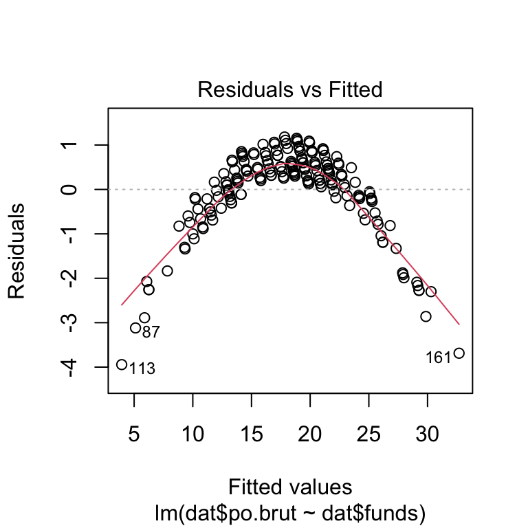
#Independence Assumption: using Residuals vs. x plotted above
plot(dat$funds, dat$po.brut, main="Relationship between funds and police brutality",
xlab="Funds in millions", ylab="Number of reported cases of police brutality")
abline(reg.output, col = "red", lwd=2)
#Equal Variance Assumption/ Homoscedasticity:
plot(reg.output, which=3)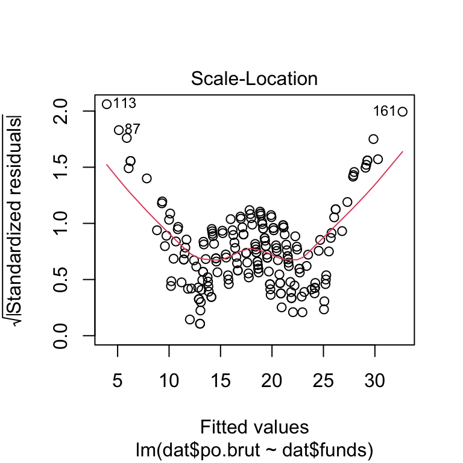
#Normal Population Assumption:
plot(reg.output, which=2)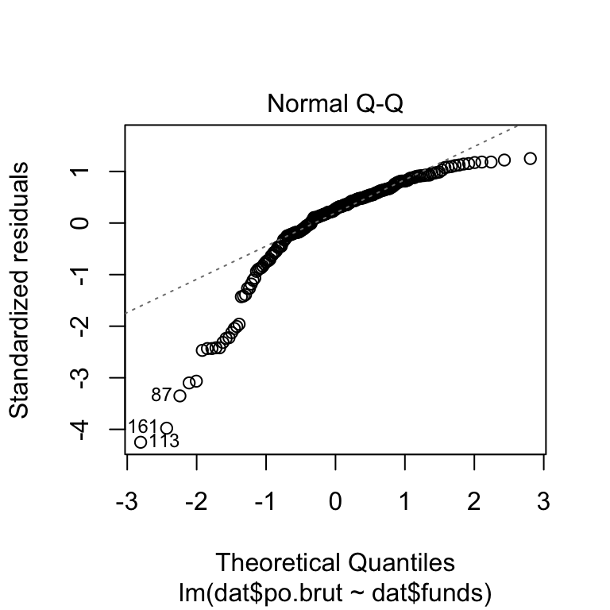
plot(reg.output, which=5)
Linearity Assumption: This assumption is not met. The residuals vs. x plot does not have a horizontal direction and does have a significant pattern in the data.
Independence Assumption: This assumption is also not met for the same reason as the linearity assumption as the residuals vs. x plot does not have a horizontal direction and does have a significant pattern in the data and because there does not seem to be a time-series component to the data.
Equal Variance Assumption/ Homoscedasticity: This assumption is not met. While the scatter plot of funds vs. reported police brutality has no apparent tendency for the variations to grow or shrink in any part of the plot, there are significant trends shown by the line in the scale-location plot showing that the errors do not have a constant variance.
Normal Population Assumption: This assumption is not met as the q-q plot has significant left skew deviations for the tail values in this plot.
As these assumptions are not met, if I had more time, I would use the box-cox method to find the best transformation for this data, transform the x variable, and repeat this process.
- Answer the question of interest based on your analysis.
While the p-value is very small, we cannot conclude that greater funding will reduce incidents of police brutality. None of the four assumptions of linear regressions were satisfied, so we cannot use this model to assess the relationship between these two variables. If this data was transformed and the assumptions could be met with the transformed model, this relationship could be properly assessed.
Problem 3: Data ethics (10 points)
Describe the dataset. Considering our lecture on data ethics, what concerns do you have about the dataset? Once you perform your analysis to answer the question of interest using this dataset, what concerns might you have about the results?
This data set represents 200 police departments with their yearly funding in millions and the departments reported incidents of police brutality. First, it is important to recognize that the police brutality count is only based on what is reported by the department and as police brutality incidents reflect poorly on the department, the department may be under reporting these incidents. This calls into question the fairness of the data as it may not be truly representative of the number of incidents that are actually occurring and could be biased as it is self-reported. Furthermore, with limited information provided by the code book, there is no information about how the sample was collected, requiring the need of assessment for random sampling before utilizing this data for analysis, as well as having no mechanism to redress if people are harmed by the results. However, based on the information provided here, this data set is good in terms of privacy and security as the departments are only represented by a numeric code that has no relation to their identification. Overall, these concerns about the ethics of this dataset call into question the validity of any results from the analysis of this data, as well as concerns about the effect the distribution of these results could have.
Assignment 4
library(tidyverse)#3.2
mpg## # A tibble: 234 × 11
## manufacturer model displ year cyl trans drv cty hwy fl class
## <chr> <chr> <dbl> <int> <int> <chr> <chr> <int> <int> <chr> <chr>
## 1 audi a4 1.8 1999 4 auto… f 18 29 p comp…
## 2 audi a4 1.8 1999 4 manu… f 21 29 p comp…
## 3 audi a4 2 2008 4 manu… f 20 31 p comp…
## 4 audi a4 2 2008 4 auto… f 21 30 p comp…
## 5 audi a4 2.8 1999 6 auto… f 16 26 p comp…
## 6 audi a4 2.8 1999 6 manu… f 18 26 p comp…
## 7 audi a4 3.1 2008 6 auto… f 18 27 p comp…
## 8 audi a4 quattro 1.8 1999 4 manu… 4 18 26 p comp…
## 9 audi a4 quattro 1.8 1999 4 auto… 4 16 25 p comp…
## 10 audi a4 quattro 2 2008 4 manu… 4 20 28 p comp…
## # … with 224 more rowsggplot(data = mpg) +
geom_point(mapping = aes(x = displ, y = hwy))
# This ggplot function creates a basic scatter plot by mapping the aes based on the given x and y variables#3.3
ggplot(data = mpg) +
geom_point(mapping = aes(x = displ, y = hwy, color = class))
# This ggplot function builds on the previous function by adding a variables color which is class which maps each point to the given variable class type in the dataset mpg
ggplot(data = mpg) +
geom_point(mapping = aes(x = displ, y = hwy, size = class))
# This ggplot function builds on the 3.2 function by adding a variables size which is class which maps each point to the given variable class type in the dataset mpg, so instead of modify the point's color, it modifies the literal size of the point in the plot
ggplot(data = mpg) +
geom_point(mapping = aes(x = displ, y = hwy, alpha = class))
# This ggplot function builds on the 3.2 function by adding a variables alpha which is class which scales the transparency of each point to the given variable class type in the dataset mpg, so instead of modify the point's color
ggplot(data = mpg) +
geom_point(mapping = aes(x = displ, y = hwy, shape = class))
# This ggplot function builds on the 3.2 function by adding a variables shape which is class which maps each point to the given variable class type in the dataset mpg by designated a specific shape to that type, so instead of modify the point's color, it modifies the literal shape that represents the points class type in the plot
ggplot(data = mpg) +
geom_point(mapping = aes(x = displ, y = hwy), color = "blue")
# This ggplot function builds on the 3.2 function by adding a variables color and manually setting it to the color blue, which makes each point in the plot be displayed with that color#3.4
#ggplot(data = mpg)
#+ geom_point(mapping = aes(x = displ, y = hwy))
# This ggplot function demonstrates a common issue where the + sign has been placed in the wrong spot by placing it at the start of a line instead of the end#3.5
ggplot(data = mpg) +
geom_point(mapping = aes(x = displ, y = hwy)) +
facet_wrap(~ class, nrow = 2)
# This ggplot function divides the data into subplots based on the categorical type of class and organizes these subplots into two rows
ggplot(data = mpg) +
geom_point(mapping = aes(x = displ, y = hwy)) +
facet_grid(drv ~ cyl)
# Conversely, this ggplot function divides the data into subplots based on the combination of two variables- drv and cyl#3.6
ggplot(data = mpg) +
geom_point(mapping = aes(x = displ, y = hwy))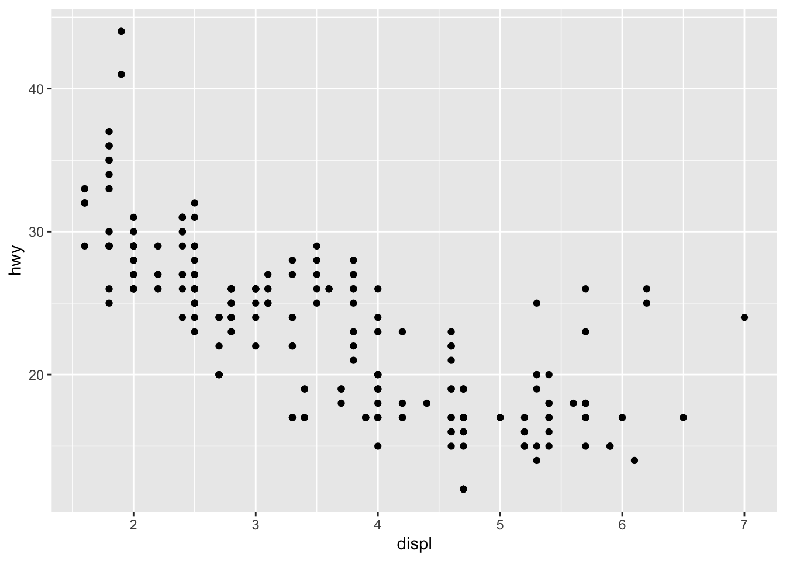
# This is the original ggplot function from 3.2
ggplot(data = mpg) +
geom_smooth(mapping = aes(x = displ, y = hwy))
# This ggplot function transforms the plot into a smooth fitted line for the previous function
ggplot(data = mpg) +
geom_smooth(mapping = aes(x = displ, y = hwy, linetype = drv))
# This ggplot function expands on the previous functions by basing the line type on the variable drv
ggplot(data = mpg) +
geom_smooth(
mapping = aes(x = displ, y = hwy, color = drv),
show.legend = FALSE
)
# This ggplot function expands on the previous functions by both basing the line color instead on the line type on drv and ensuring that a legend will not appear in the plot with this modification
ggplot(data = mpg) +
geom_point(mapping = aes(x = displ, y = hwy)) +
geom_smooth(mapping = aes(x = displ, y = hwy))
# This ggplot function displays both of the first two ggplot functions from this section on the same plot together
ggplot(data = mpg, mapping = aes(x = displ, y = hwy)) +
geom_point() +
geom_smooth()
# This ggplot function is just another way to do what the previous function did- same result
ggplot(data = mpg, mapping = aes(x = displ, y = hwy)) +
geom_point(mapping = aes(color = class)) +
geom_smooth()
# This ggplot function expands on the previous functions by creating an aesthetic for only the point plot by setting the color variable to class, which has no effect on the smooth plot as the layer function is localized#3.7
ggplot(data = diamonds) +
geom_bar(mapping = aes(x = cut))
# This ggplot function shows a basic bar graph based on the variable cut and its frequency in the dataset
ggplot(data = diamonds) +
stat_count(mapping = aes(x = cut))
# This ggplot function has an identical result as the previous function, but is a just different way to complete it
demo <- tribble(
~cut, ~freq,
"Fair", 1610,
"Good", 4906,
"Very Good", 12082,
"Premium", 13791,
"Ideal", 21551
)
ggplot(data = demo) +
geom_bar(mapping = aes(x = cut, y = freq), stat = "identity")
# These two functions override the standard count function that is a part of the geom_bar function and instead manually designates the values it wants to use
ggplot(data = diamonds) +
geom_bar(mapping = aes(x = cut, y = stat(prop), group = 1))
# This ggplot function just expands on the previous function by ordering the x values based on their y values
ggplot(data = diamonds) +
stat_summary(
mapping = aes(x = cut, y = depth),
fun.min = min,
fun.max = max,
fun = median
)
# This ggplot function expands on the previous function by summarizing the y value for each unique x value to better display the statistical summaries of the data in the plot by demonstrating the min, max, and median values of each x value#3.8
ggplot(data = diamonds) +
geom_bar(mapping = aes(x = cut, colour = cut))
# This ggplot function outlines each of the bars with a unique color to demonstrate its corresponding to a particular cut value
ggplot(data = diamonds) +
geom_bar(mapping = aes(x = cut, fill = cut))
# This ggplot function fills each of the bars with a unique color to demonstrate its corresponding to a particular cut value
ggplot(data = diamonds) +
geom_bar(mapping = aes(x = cut, fill = clarity))
# This ggplot function expands on the previous functions and instead of just filling it based on one variable, it fills it based on two, cut and clarity. This fills each section of the bar based on the representative frequency of the other categorical variable it is being combined with
ggplot(data = diamonds, mapping = aes(x = cut, fill = clarity)) +
geom_bar(alpha = 1/5, position = "identity")
ggplot(data = diamonds, mapping = aes(x = cut, colour = clarity)) +
geom_bar(fill = NA, position = "identity")
# These two ggplots represent the position = "identity" option which eliminates the stacked bar graph nature and instead just places the values exactly where they are in the dataset, however due to overlap, the aesthetic of the plots need to be modified. The first uses a small alpha value so that the sections are slightly transparent and the second used NA so that only the sections are outlined
ggplot(data = diamonds) +
geom_bar(mapping = aes(x = cut, fill = clarity), position = "fill")
# This ggplot modifies the third function from this section by making each of the stacked bars the same height, which is useful for comparing the size of each section/ proportional distribution
ggplot(data = diamonds) +
geom_bar(mapping = aes(x = cut, fill = clarity), position = "dodge")
# This ggplot modifies the third function from this section by instead placing each section together horizontally rather than stacking them vertically, which allows for easier comparison for individual values
ggplot(data = mpg) +
geom_point(mapping = aes(x = displ, y = hwy), position = "jitter")# This ggplot function modifies the original scatter plot from 3.2 by adding a little bit of noise to each datapoint to avoid overlapping and to better represent the data#3.9
ggplot(data = mpg, mapping = aes(x = class, y = hwy)) +
geom_boxplot()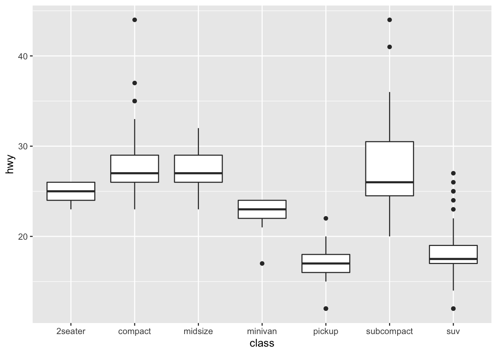
ggplot(data = mpg, mapping = aes(x = class, y = hwy)) +
geom_boxplot() +
coord_flip()
# The second ggplot function is the same as the first ggplot function here, however the x and y values have been switched in the second one
nz <- map_data("nz")
ggplot(nz, aes(long, lat, group = group)) +
geom_polygon(fill = "white", colour = "black")
ggplot(nz, aes(long, lat, group = group)) +
geom_polygon(fill = "white", colour = "black") +
coord_quickmap()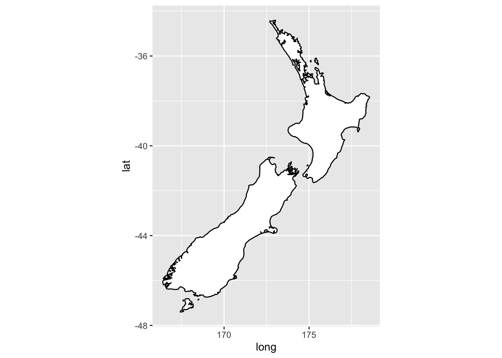
# The second ggplot function here correctly sets the aspect ratio for the cordinate map creates in the first ggplot function here
bar <- ggplot(data = diamonds) +
geom_bar(
mapping = aes(x = cut, fill = cut),
show.legend = FALSE,
width = 1
) +
theme(aspect.ratio = 1) +
labs(x = NULL, y = NULL)
bar + coord_flip()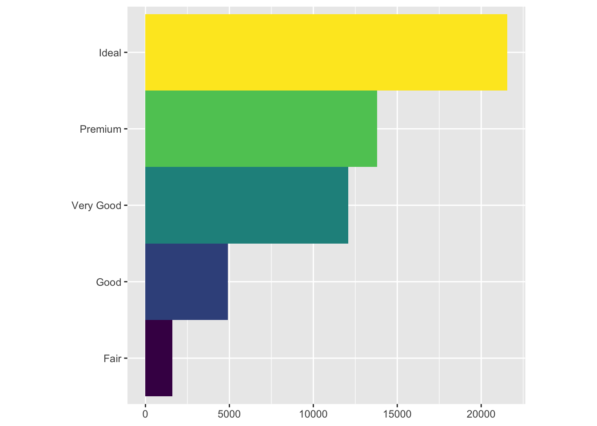
bar + coord_polar()
# The first ggplot function here creates a standard bar chart for the data, and then the coordinate flip and coordinate polar functions applied to this bar chart transform it into a coxcomb chart#28.2
ggplot(mpg, aes(displ, hwy)) +
geom_point(aes(color = class)) +
geom_smooth(se = FALSE) +
labs(title = "Fuel efficiency generally decreases with engine size")
# This ggplot function builds on simpler forms of this point and smooth plot by adding a plot title with the labs variable
ggplot(mpg, aes(displ, hwy)) +
geom_point(aes(color = class)) +
geom_smooth(se = FALSE) +
labs(
title = "Fuel efficiency generally decreases with engine size",
subtitle = "Two seaters (sports cars) are an exception because of their light weight",
caption = "Data from fueleconomy.gov"
)
# This ggplot function builds on the previous function by also adding a subtitle and caption within the labs portion
ggplot(mpg, aes(displ, hwy)) +
geom_point(aes(colour = class)) +
geom_smooth(se = FALSE) +
labs(
x = "Engine displacement (L)",
y = "Highway fuel economy (mpg)",
colour = "Car type"
)
# This ggplot function modifies the previous functions by changing both the x and y axis titles, as well as the legend title
df <- tibble(
x = runif(10),
y = runif(10)
)
ggplot(df, aes(x, y)) +
geom_point() +
labs(
x = quote(sum(x[i] ^ 2, i == 1, n)),
y = quote(alpha + beta + frac(delta, theta))
)# This ggplot function shows how to use mathmatical exquations instead of word quotes for these label variables#28.3
best_in_class <- mpg %>%
group_by(class) %>%
filter(row_number(desc(hwy)) == 1)
ggplot(mpg, aes(displ, hwy)) +
geom_point(aes(colour = class)) +
geom_text(aes(label = model), data = best_in_class)
# This ggplot function is very similar to a simple scatter plot with geom_point, however it also adds a label onto certain points based on the parameter given in data, best_in_class
ggplot(mpg, aes(displ, hwy)) +
geom_point(aes(colour = class)) +
geom_label(aes(label = model), data = best_in_class, nudge_y = 2, alpha = 0.5)
# This ggplot function extends on the previous function by adding a small box around the text and shifting it slightly higher than the point to make it easier to read
ggplot(mpg, aes(displ, hwy)) +
geom_point(aes(colour = class)) +
geom_point(size = 3, shape = 1, data = best_in_class) +
ggrepel::geom_label_repel(aes(label = model), data = best_in_class)# This ggplot function extends on the previous function by ensuring that none of the previous labels overlap in the plot
class_avg <- mpg %>%
group_by(class) %>%
summarise(
displ = median(displ),
hwy = median(hwy)
)
ggplot(mpg, aes(displ, hwy, colour = class)) +
ggrepel::geom_label_repel(aes(label = class),
data = class_avg,
size = 6,
label.size = 0,
segment.color = NA
) +
geom_point() +
theme(legend.position = "none")# This set of functions builds on the previous ggplot function by replacing the legend with color coordinating of the labels which serves to seperate the points in the same manner that the legend did
label <- mpg %>%
summarise(
displ = max(displ),
hwy = max(hwy),
label = "Increasing engine size is \nrelated to decreasing fuel economy."
)
ggplot(mpg, aes(displ, hwy)) +
geom_point() +
geom_text(aes(label = label), data = label, vjust = "top", hjust = "right")
# This set of functions creates a label and then inputs it into the top right corner of the plot
label <- tibble(
displ = Inf,
hwy = Inf,
label = "Increasing engine size is \nrelated to decreasing fuel economy."
)
ggplot(mpg, aes(displ, hwy)) +
geom_point() +
geom_text(aes(label = label), data = label, vjust = "top", hjust = "right")
# This ggplot function extends on the previous function by moving the text all the way into the corner using the Inf parameters
"Increasing engine size is related to decreasing fuel economy." %>%
stringr::str_wrap(width = 40) %>%
writeLines()## Increasing engine size is related to
## decreasing fuel economy.# This function is merely used to automatically input line breaks, rather than the manual \n process used in these previous functions#28.4
ggplot(mpg, aes(displ, hwy)) +
geom_point(aes(colour = class))
ggplot(mpg, aes(displ, hwy)) +
geom_point(aes(colour = class)) +
scale_x_continuous() +
scale_y_continuous() +
scale_colour_discrete()
# This second ggplot function demonstrates the manual process of how the scales are automatically set in the first function by the ggplot package
ggplot(mpg, aes(displ, hwy)) +
geom_point() +
scale_y_continuous(breaks = seq(15, 40, by = 5))
# This ggplot function overrides the standard breaks and instead manually sets them to be every 5 values between 15-40
ggplot(mpg, aes(displ, hwy)) +
geom_point() +
scale_x_continuous(labels = NULL) +
scale_y_continuous(labels = NULL)
# This ggplot function overrides the standard breaks by removing the lick labels on both the x and y axises
presidential %>%
mutate(id = 33 + row_number()) %>%
ggplot(aes(start, id)) +
geom_point() +
geom_segment(aes(xend = end, yend = id)) +
scale_x_date(NULL, breaks = presidential$start, date_labels = "'%y")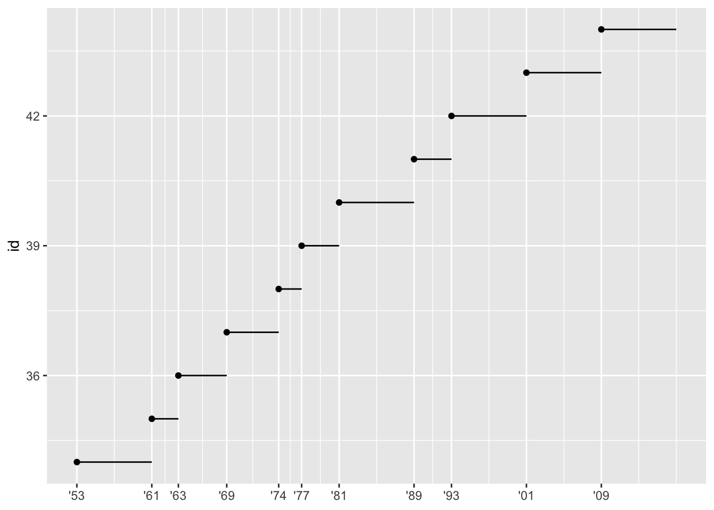
# This ggplot function overrides the standard breaks by setting the tick values to be exactly where the x values fall in the plot
base <- ggplot(mpg, aes(displ, hwy)) +
geom_point(aes(colour = class))
base + theme(legend.position = "left")
base + theme(legend.position = "top")
base + theme(legend.position = "bottom")
base + theme(legend.position = "right") # the default
# This ggplot function overrides the typically location of the legend and instead shifts it to the left, right, below, and above the plot here
ggplot(mpg, aes(displ, hwy)) +
geom_point(aes(colour = class)) +
geom_smooth(se = FALSE) +
theme(legend.position = "bottom") +
guides(colour = guide_legend(nrow = 1, override.aes = list(size = 4)))
#> `geom_smooth()` using method = 'loess' and formula 'y ~ x'
# This ggplot function further modifies the legend by both setting the number of rows that the legend has and by enlarging the size of the points in the legend by using the list size variable
ggplot(diamonds, aes(carat, price)) +
geom_bin2d()
ggplot(diamonds, aes(log10(carat), log10(price))) +
geom_bin2d()
# This ggplot function shows a transformed scale as the second function uses a log transformation to better represent the relashonship between the variables
ggplot(diamonds, aes(carat, price)) +
geom_bin2d() +
scale_x_log10() +
scale_y_log10()
# This ggplot function builds on the previuous function by changing the axises to be the origonal, not the transformed, values to better read and interpret the plot
ggplot(mpg, aes(displ, hwy)) +
geom_point(aes(color = drv))
ggplot(mpg, aes(displ, hwy)) +
geom_point(aes(color = drv)) +
scale_colour_brewer(palette = "Set1")
# The second ggplot function here slightly changes the color scale used in the first function with the palatte variable, which is useful for perception especially for people with color blindness
ggplot(mpg, aes(displ, hwy)) +
geom_point(aes(color = drv, shape = drv)) +
scale_colour_brewer(palette = "Set1")
# This ggplot function further modifies the scales by also adding the shape variable to the points which ensures the points are still distiguishable even when displayed in black and white
presidential %>%
mutate(id = 33 + row_number()) %>%
ggplot(aes(start, id, colour = party)) +
geom_point() +
geom_segment(aes(xend = end, yend = id)) +
scale_colour_manual(values = c(Republican = "red", Democratic = "blue"))
# This ggplot function how to manually set the color scales for specific variables when the color needs to represent how they typically are classified such as with democrats and republicans with blue and red
df <- tibble(
x = rnorm(10000),
y = rnorm(10000)
)
ggplot(df, aes(x, y)) +
geom_hex() +
coord_fixed()ggplot(df, aes(x, y)) +
geom_hex() +
viridis::scale_fill_viridis() +
coord_fixed()
# These ggplot functions demonstrate how the color gradient can also be based on the how the point sits in relation to the mean of that variable based on how transparent or the coloring it has is visually percieved#28.5
ggplot(mpg, mapping = aes(displ, hwy)) +
geom_point(aes(color = class)) +
geom_smooth() +
coord_cartesian(xlim = c(5, 7), ylim = c(10, 30))
mpg %>%
filter(displ >= 5, displ <= 7, hwy >= 10, hwy <= 30) %>%
ggplot(aes(displ, hwy)) +
geom_point(aes(color = class)) +
geom_smooth()
# This ggplot function zooms in on the previous function's plot with the coord_Cartesian and displ variables, which demonstrates that the coord_Cartesian variable is a much better representative plot for the zoomed in portion
suv <- mpg %>% filter(class == "suv")
compact <- mpg %>% filter(class == "compact")
ggplot(suv, aes(displ, hwy, colour = drv)) +
geom_point()
ggplot(compact, aes(displ, hwy, colour = drv)) +
geom_point()
# This ggplot demonstrates how the plot transformes when the x, y, and color scales are are limited or expanded to the same range equal comparission of differnt subportions of the data and plots
x_scale <- scale_x_continuous(limits = range(mpg$displ))
y_scale <- scale_y_continuous(limits = range(mpg$hwy))
col_scale <- scale_colour_discrete(limits = unique(mpg$drv))
ggplot(suv, aes(displ, hwy, colour = drv)) +
geom_point() +
x_scale +
y_scale +
col_scale
ggplot(compact, aes(displ, hwy, colour = drv)) +
geom_point() +
x_scale +
y_scale +
col_scale
# These ggplots are simply different ways to achieve the same goal of setting all of the x, y, and color scales to the same range- this can also be achieved with faceting#28.6
ggplot(mpg, aes(displ, hwy)) +
geom_point(aes(color = class)) +
geom_smooth(se = FALSE) +
theme_bw()
# This ggplot function sets the theme of the plot- here to white background with grid lines, to one of 8 pre-downloaded themes included in the package#28.7
ggplot(mpg, aes(displ, hwy)) + geom_point()
ggsave("my-plot.pdf")
# This ggplot function saves the plot onto the users disk with the current dimensionsFinal Project
Investigating the Relationship Between Political Leaning and the Type/Frequency of Criminal Activity on University Campuses Across the United States
Theodora Athanitis, Tori Borlase, Halle Wasser CRIM 250: Statistics for the Social Sciences Dr. Maria Cuellar December 12, 2021
Research Motivation and Question
As college students, the topic of crime on campus is very relevant to us in terms of public safety. Additionally, as all three of us are female students, certain crime types such as those of a violent or sexual nature feel more relevant and concerning. As recent articles in the Daily Pennsylvanian discuss, crime and crime reporting have become more salient to students as classes move back in-person (Perlman, 2021). In light of the return to campus, we feel as though students should be aware of the rates and types of crimes that are most frequent, as well as the factors that impact crime rates on college campuses. Additionally, some studies show that peoples’ perceptions of crime differ depending on their political leanings (Gramlich, 2016). Therefore, our research question is as follows: Does the political leaning (Democratic or Republican) of states affect either the crime type or the frequency of criminal activity on the campuses of public universities in that state? Our question and dataset are interesting because we can 1) help students be more aware of crimes that are highly relevant to them and 2) test whether there is a correlation between political beliefs and actual reported crime, or if future research is necessary to determine if the disparities between crime perceptions are due to other factors. With our analysis, we should be able to shed light on our research question as well as help improve our understanding of topics that are particularly relevant to us. Our hypothesis is that, in states with Republican political leanings, crime will be higher because Republican states may place a greater emphasis on policing and dedicate more resources to monitoring crime.
Exploratory Data Analysis
Description of the Dataset
The UCR Table 9 dataset (“Offenses Known to Law Enforcement by State by University and College”, 2019) is a voluntary reporting collection composed of 569 observations on 14 variables. The variables in the dataset are: state, university.college, Campus, student.enrollment, violent.crime, murder, rape, robbery, aggravated.assault, property.crime, burglary, larceny.theft, motor.vehicle.theft, and arson (please refer to Appendix A for the codebook), with each observation corresponding to an in-state university or college. It is important to note that these observations were not evenly distributed across states; rather, some states had observations for only one in-state university, while others had observations for more than 5.
Missing Values
Within the dataset, there were many missing values for the “arson” variable. This may be because it is a relatively uncommon crime on college campuses; while some institutions chose to denote a lack of arson with “0”, others may have chosen to simply not report a value. There were four states that were not included in the dataset (namely, Alabama, Idaho, Hawaii, and Oregon) because they either did not release complete 12 month data or they did not release any data at all.
Additional Data
For our analysis, we created several new tables to create our EDA plots and to utilize for our linear regressions. The table used for the majority of our analysis is composed of 46 observations on 13 variables, with each observation representing the states with reported data (omitting Alabama, Idaho, Hawaii, and Oregon). The added variables in these datasets are state.leaning (a binary variable that represents the political affiliation the state had in the 2016 presidential election; 0=democratic and 1= republican) and total (an integer variable that is the summation of all crimes committed in the state; i.e., the sum of all crimes in all participating in-state institutions within a state).
Load the data.
library(readr)
library(knitr)
dat <- read.csv(file = 'FinalProjectData.csv')
dat5 <- read.csv(file = 'FinalProjectData5.csv')Breakdown of Political Leaning
Within the UCR Dataset, and of the 46 states that reported data about crime on college campuses, we found that a majority were Republican as determined by the 2016 election results. With 28 Republican states and only 18 Democratic ones, this discrepancy is an important consideration given that our analysis compares the differences in crime rates between these two categories of states on average. This means that a smaller number of states skews the average number of crimes generated during the regression analysis significantly, despite relative consistencies in the number of colleges/populations on average between the two political affiliations. The takeaway of this plot is that there were more Republican states than Democratic states reporting; therefore, we should be cognizant that our conclusions may reflect this disparity.
y = data.frame(Political_Leaning=c('Republican', 'Democratic'),Number=c(28,18))
colours = c("red", "blue")
w <- c(0.05, 0.05)
barplot(y$Number, width = w, main='Number of Democratic and Republican
States in the UCR Dataset', ylab='Number of States Represented in the UCR Dataset', xlab='State Political Affiliation', names.arg=y$Political_Leaning, col=colours, ylim=c(0,30))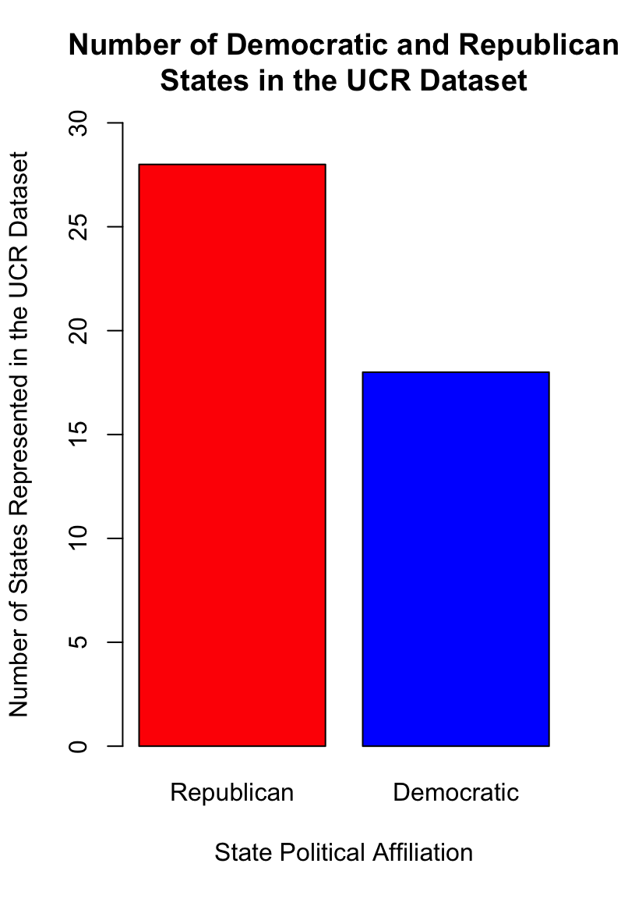
Figure 1. Bar Graph of the Number of Democratic and Republican States in the UCR Table 9 Dataset.
Frequencies of Crime Types
The following bar graph shows the frequencies of different types of crimes reported in both Democratic and Republican states. As shown in Figure 2, there were more crimes in Republican states for all but one category of crime (aggravated assault). However, we should keep in mind that there were significantly more Republican states that reported crime data to the UCR, and that our dataset did not contain information about the population of states, therefore it is difficult to contextualize these results. Based on these differences, we might expect that our model and causal analysis will show that Republican states have higher amounts of crime.counts5 <- t(as.matrix(dat5[-1]))
counts5## [,1] [,2] [,3] [,4] [,5] [,6] [,7] [,8] [,9] [,10]
## X0 1420 214 47092 22796 2 736 20223 1837 82 646
## X1 1481 211 52346 25404 5 957 22423 2028 58 5colnames(counts5) <- dat5$crime_type
colours = c("blue", "red")
barplot(counts5, main='Frequency of Crime Type by Political Leaning', ylab='Count of Criminal Offenses', xlab='Crime Type',beside = TRUE,
col=colours, ylim=c(0,max(counts5)*1))
legend('topright',fill=colours,legend=c('Democratic States','Republican States'))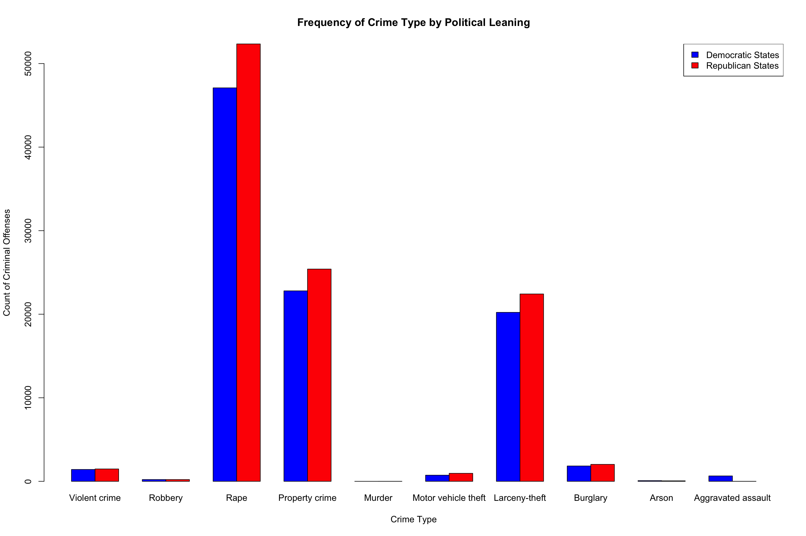 Figure 2. Bar graph of the number and type of crimes at college campuses in Democratic and Republican states.
Modeling the Data
As a preliminary step in assessing the relationship between the total crime variable and the binary state.leaning variable, we first found the correlation between the two variables to be -0.1245639.
# Correlation between Crime and Political Affiliation
cor(dat$State.Leaning, dat$Total)## [1] -0.1245639Despite this negative result, we further explored this relationship by regressing total crime on state.leaning. This analysis found that the average number of crimes on college campuses annually is 5280 total crimes Democratic States and 3767 in Republican States. However, we also found that both the equal variance assumption and the normal population assumption were not met, therefore invalidating this model to assess this relationship with the data in its current form (refer to Appendix B for diagnostic plots).
# Total Crime Regression
reg.output <- lm(dat$Total ~ dat$State.Leaning, data = dat)
summary(reg.output)##
## Call:
## lm(formula = dat$Total ~ dat$State.Leaning, data = dat)
##
## Residuals:
## Min 1Q Median 3Q Max
## -4901.4 -3097.1 -1587.2 698.5 30250.6
##
## Coefficients:
## Estimate Std. Error t value Pr(>|t|)
## (Intercept) 5280 1417 3.726 0.000551 ***
## dat$State.Leaning -1513 1816 -0.833 0.409484
## ---
## Signif. codes: 0 '***' 0.001 '**' 0.01 '*' 0.05 '.' 0.1 ' ' 1
##
## Residual standard error: 6012 on 44 degrees of freedom
## Multiple R-squared: 0.01552, Adjusted R-squared: -0.006858
## F-statistic: 0.6935 on 1 and 44 DF, p-value: 0.4095plot(reg.output)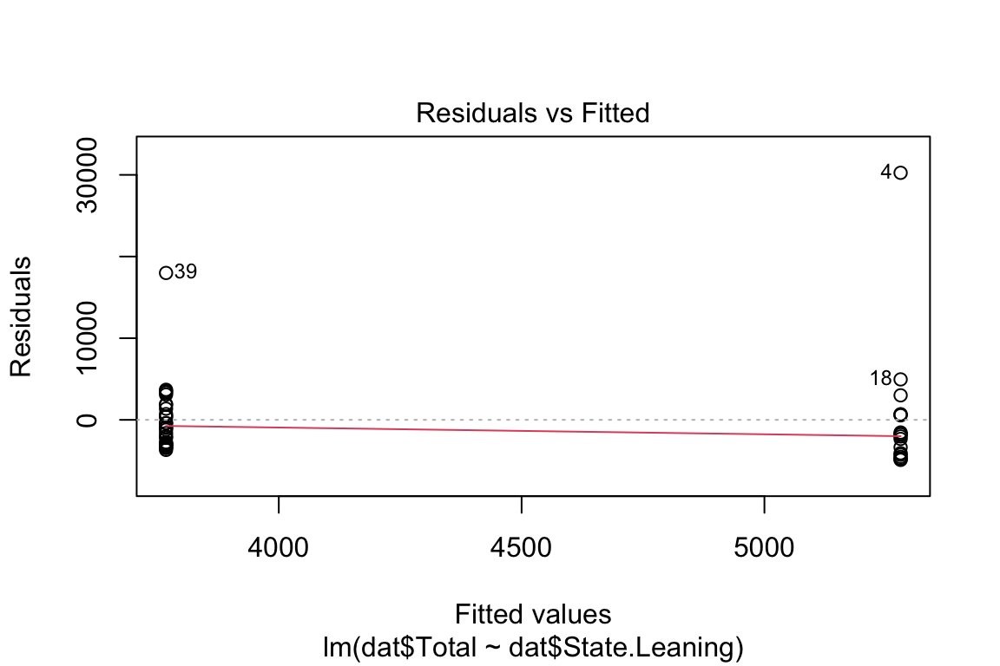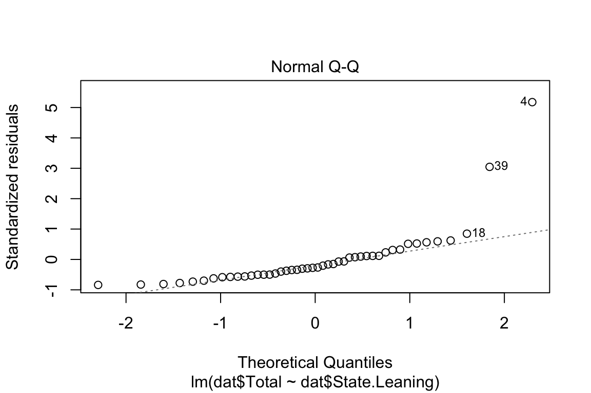

# Linearity Assumption:
plot(dat$State.Leaning, reg.output$residuals, main="Residuals vs. x", xlab="x, Political Leaning", ylab="Residuals")
abline(h = 0, lty="dashed")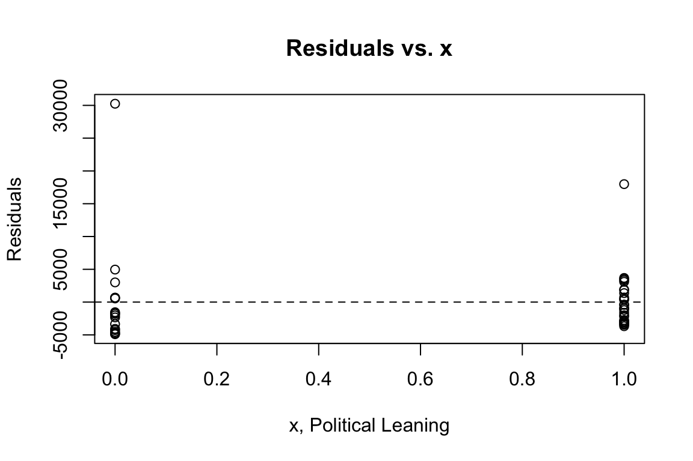
plot(reg.output, which=1)
# Independence Assumption: using Residuals vs. x plotted above
plot(dat$State.Leaning, dat$Total, main="Relationship between crime and political leaning",
xlab="Political Leaning", ylab="Number of criminal offences")
abline(reg.output, col = "red", lwd=2)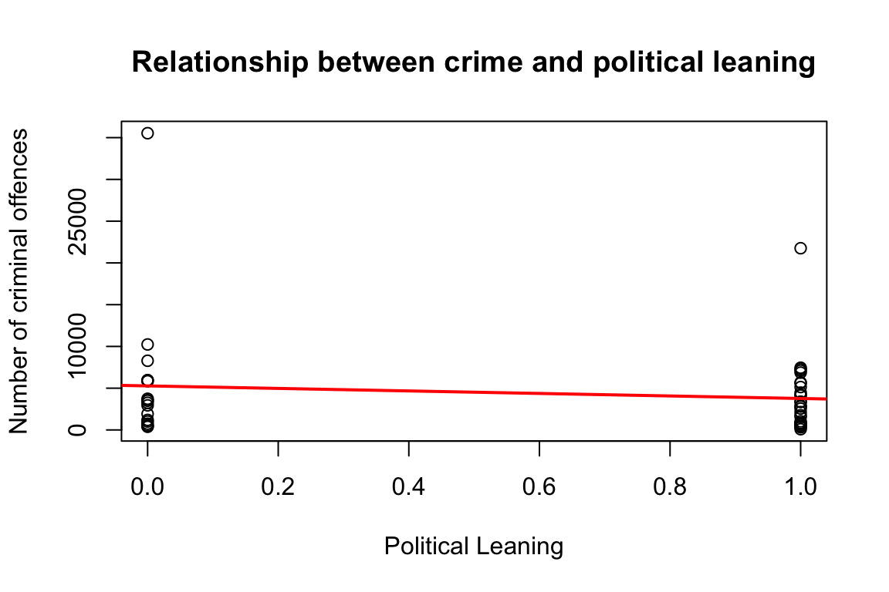
# Equal Variance Assumption/ Homoscedasticity:
plot(reg.output, which=3)
# Normal Population Assumption:
plot(reg.output, which=2)
plot(reg.output, which=5)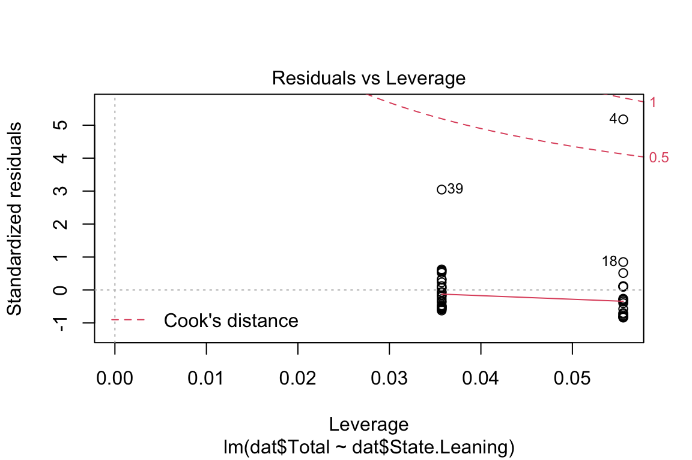
Linearity Assumption: This assumption is met. The residuals vs. x plot has a horizontal direction and does have a significant pattern in the data. Furthermore, the residuals vs fitted plot is fairly horizontal and flat, meaning that there is no discernible non-linear trend to the residuals.
Independence Assumption: This assumption is also met for the same reason as the linearity assumption as the residuals vs. x plot has a horizontal direction and does have a significant pattern in the data, as well as because there does not seem to be a time-series component to the data.
Equal Variance Assumption/ Homoscedasticity: This assumption is not met. The scatter plot of crimes vs. political affiliation has no variations with shrinkage in the plot. Additionally, there are significant negative trends, based on the size of the data, shown by the line in the scale-location plot showing that the errors do not have a constant variance.
Normal Population Assumption: This assumption is not met since the q-q plot has significant left skew deviations and is heavy-tailed for the values in this plot.
As these assumptions are not met, normally the next step would be to use the box-cox method to find the best transformation for this data, transform the x variable, and repeat this process. However, as the p-value was so large at 0.4095, demonstrating that this relationship is not statistically significant, we instead concluded that we cannot reject the null hypothesis and instead explored whether or not this relationship existed for a particular crime type variable.
For the rape and violent crime regression it was found that the average number of rapes on college campuses in Democratic states is 2616.2 and 1868.5 in Republican states, and the average number of violent crimes in Democratic states is 78.89 and 52.89 for Republican states. Unfortunately, the two variables that we explored also had significant p-values of 0.4116 and 0.2967, respectively, and we therefore concluded that we cannot reject the null hypothesis for these individual variables either.
# Rape regression
reg.output1 <- lm(dat$Rape ~ dat$State.Leaning, data = dat)
summary(reg.output1)##
## Call:
## lm(formula = dat$Rape ~ dat$State.Leaning, data = dat)
##
## Residuals:
## Min 1Q Median 3Q Max
## -2427.2 -1536.8 -780.4 348.2 14986.8
##
## Coefficients:
## Estimate Std. Error t value Pr(>|t|)
## (Intercept) 2616.2 702.8 3.723 0.000557 ***
## dat$State.Leaning -746.7 900.8 -0.829 0.411605
## ---
## Signif. codes: 0 '***' 0.001 '**' 0.01 '*' 0.05 '.' 0.1 ' ' 1
##
## Residual standard error: 2982 on 44 degrees of freedom
## Multiple R-squared: 0.01538, Adjusted R-squared: -0.007001
## F-statistic: 0.6872 on 1 and 44 DF, p-value: 0.4116# Violent Crime Regression
reg.output2 <- lm(dat$Violent.crime ~ dat$State.Leaning, data = dat)
summary(reg.output2)##
## Call:
## lm(formula = dat$Violent.crime ~ dat$State.Leaning, data = dat)
##
## Residuals:
## Min 1Q Median 3Q Max
## -77.89 -46.64 -19.39 31.11 417.11
##
## Coefficients:
## Estimate Std. Error t value Pr(>|t|)
## (Intercept) 78.89 19.20 4.108 0.000171 ***
## dat$State.Leaning -26.00 24.62 -1.056 0.296690
## ---
## Signif. codes: 0 '***' 0.001 '**' 0.01 '*' 0.05 '.' 0.1 ' ' 1
##
## Residual standard error: 81.48 on 44 degrees of freedom
## Multiple R-squared: 0.02472, Adjusted R-squared: 0.002556
## F-statistic: 1.115 on 1 and 44 DF, p-value: 0.2967While this analysis does not show a relationship between crime frequency on college campuses and the political affiliation of the state in which it is located, this relationship may exist in an indirect fashion and is not represented in this dataset due to other causal factors that we will discuss in the following sections.
Causal Analysis
Causal Factors
As a reminder, our question of interest was if there was a relationship between state political leaning and crime on college campuses. We selected to not conduct a causal analysis given our low p-values in our regression analysis, especially because many other factors could cause crime to increase or decrease, and we are unable to answer a causal question with observational data. There may be other causal mediators that could change crime on college campuses other than a direct effect of the political leanings of the state in which the college is located. As seen in our DAG below, while there may be a direct relationship between our main variables of interest, political affiliations may also impact police funding, social program funding, reporting standards, and open carry laws (to name a few), which may in turn be the true cause of different crimes and their frequencies. The DAG below shows those relationships, and especially given our low p-values, we should be cautious in making any causal assessments for our specific research question.
Figure 3. Directed Acyclic Graph of the relationship between state political party affiliation, crime type and frequency on campus, and other intermediary factors.
Final Discussion
Overall, our regression analysis failed all but two of the assumption tests as well as returning relatively high p-values. We are unable to reject the null hypothesis that political affiliation of states has no impact on the crime type or frequency on college campuses. When analyzing our DAG, it is important to consider which internal nodes have causal effects and the degree to which these nodes influence the potential for a causal relationship. Although our analysis may suggest that there is no causal relationship between our variables of interest, it is clear that the relationship might still exist. In order to reach a conclusion, a discussion of our method’s limitations is warranted, as well as future research suggestions to avoid similar issues.
Limitations
Along with the limitations discussed above regarding the incomplete reporting data and the inclusion of more Republican states, there are other key limitations that need to be addressed. Firstly, California and Texas were significant outliers given that they not only had the most in-state institutions voluntarily report but the institutions within these states also had larger student enrollments. Given that our regression analysis results show the number of crimes on average, any state/institution with a larger student enrollment would skew the average for each state, shifting the representative sample of the states within each political affiliation group. Another limitation of our method is that we only utilized 2016 election results to assign political alignment rather than placing the state on a spectrum of the percentage of votes for a certain party. Because of this, the state.leaning variable was binary, which might explain why our linear regression model did not satisfy any of the assumptions. While one might question why we chose to keep this variable as binary, rather than switching to a spectrum before completing our analysis, the existence of swing states would have made it difficult to analyze the results. If states were hovering near 50%, it would be difficult to determine the influence of political affiliation on perceptions of crime and policing.
Future Research Recommendations
Although the results of our analysis suggest that a state’s political leaning does not influence the type of frequency of crime on in-state university campuses, this determination is far from sufficient to rule out the possibility of relationship. Based on our study’s limitations, it would be beneficial to analyze three different categories of states: (1) Republican stronghold states, (2) Democratic stronghold states, and (3) swing states. This political breakdown, along with a discussion of the changes in crime rates on college campuses within these states for the year directly following an election may better explain the relationship between political affiliation and crime type and frequency of in-state institutions. Another suggestion would be standardizing the data points collected by looking at crime rates per capita and including population and campus size information such that we are able to compare universities of equal student-enrollment. In other words, data points need to be standardized in order to control for confounding variables, such as the environment (urban vs. rural campus, the campus having its own police force, etc.). Lastly, we would suggest utilizing the campus’ political leaning, rather than the political leaning of the state where the college is located given that these political leanings may conflict, especially in swing states. These method recommendations lend themselves to better answer the research question of interest.
Concluding Remarks
In conclusion, our data analysis showed that there was no statistically significant correlation between state political leaning and crime types and frequencies on college campuses. Given that our data was observational, we were unable to conduct a proper causal analysis, and we hope that future research in this field can further explore both correlation and causal relationships between our two variables of interest.
References
Federal Bureau of Investigation. (2019). 2019 Crime in the United States: Table 9, Offenses Known to Law Enforcement by State by University and College, 2019. U.S. Department of Justice FBI: UCR. https://ucr.fbi.gov/crime-in-the-u.s/2019/crime-in-the-u.s.-2019/topic-pages/tables/table-9/table-9.xls/view.
Gramlich, J. (2016, November 16). Voters’ perceptions of crime continue to conflict with reality. Pew Research Center. https://www.pewresearch.org/fact-tank/2016/11/16/voters-perceptions-of-crime-continue-to-conflict-with-reality/.
Perlman, L. (2021, November 4). 3 crimes, 0 alerts: A look into Penn’s crime reporting system. The Daily Pennsylvanian. https://www.thedp.com/article/2021/11/penn-alerts-clery-crimes-reporting-system.
Appendix A
Codebook: Variable Names and Relevant Definitions
#state
# Full name of the state where the college campus is located
#university.college
# Full name of college or university
#Campus
# Individual campus name where applicable- ex. California State University ‘Bakersfield’, if inapplicable a # value of N/A is inputted
#student.enrollment
# Integer variable based on 2018 United States Department of Education enrollment reports that includes both undergraduate and graduate populations where applicableThe following variables are based on the local definition of the crime in the given jurisdiction- the only exceptions are included below.
#violent.crime
#murder
# This variable includes both murder and non-negligent manslaughter
#rape
# This definition is based on the 2017 UCR revised defintion of rape that removes the variable of ‘forcible’ from the classification
#robbery
#aggravated.assault
#property.crime
#burglary
#larceny.theft
#motor.vehicle.theft
#arson\[\\[2in]\]